Emergent rewrites in knot theory and logic
Marius Buliga (IMAR)
I explain in what sense new graph rewrite systems emerge from given ones, with two examples:
- • the emergence of the R3 (Reidemeister 3) rewrite from R1, R2 and some uniform continuity assumptions, and relations to curvature,
- • hit a limit in the ability to reason with handwritten graphs
- • the emergence of the beta rewrite in lambda calculus from the shuffle rewrite and relations to the commutativity of the addition of vectors in the tangent space of a manifold
Drawing conventions
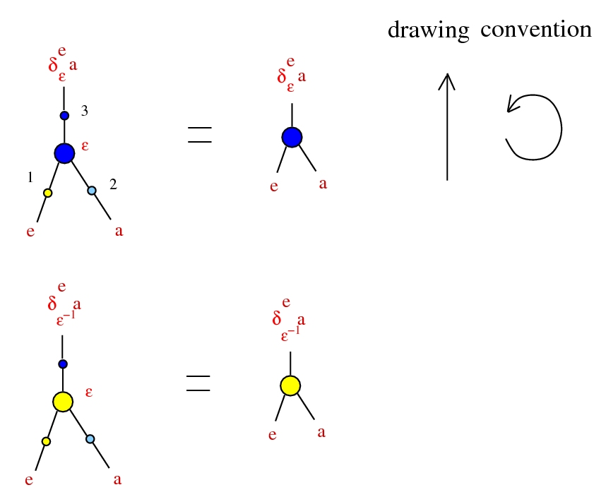
Emergent algebras
Used in: A characterization of sub-riemannian spaces as length dilatation structures constructed via coherent projections a solution of the problem of intrinsic characterization of sub-riemannian manifolds posed by M. Gromov, 1996.
introduced as algebras in arXiv:0907.1520, as a λ calculus in arXiv:1807.02058.
Emergent algebras
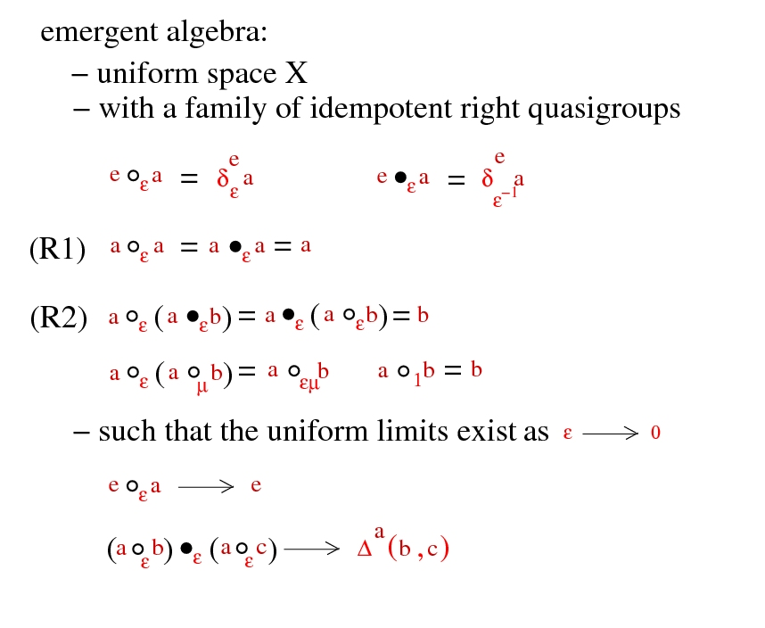
Emergent algebras

Emergent algebras
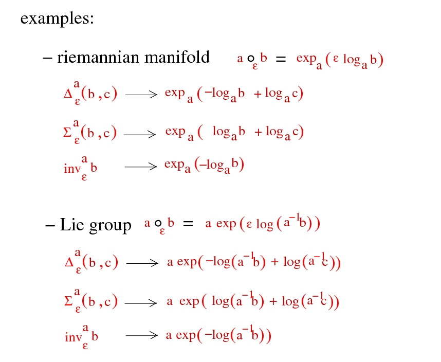
Emergent algebras
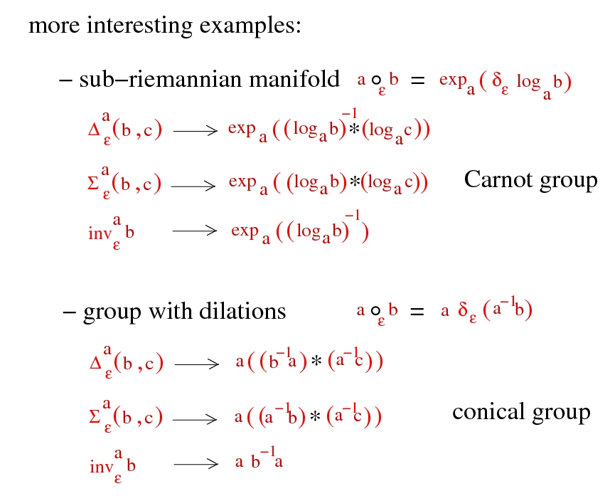
Emergent algebras
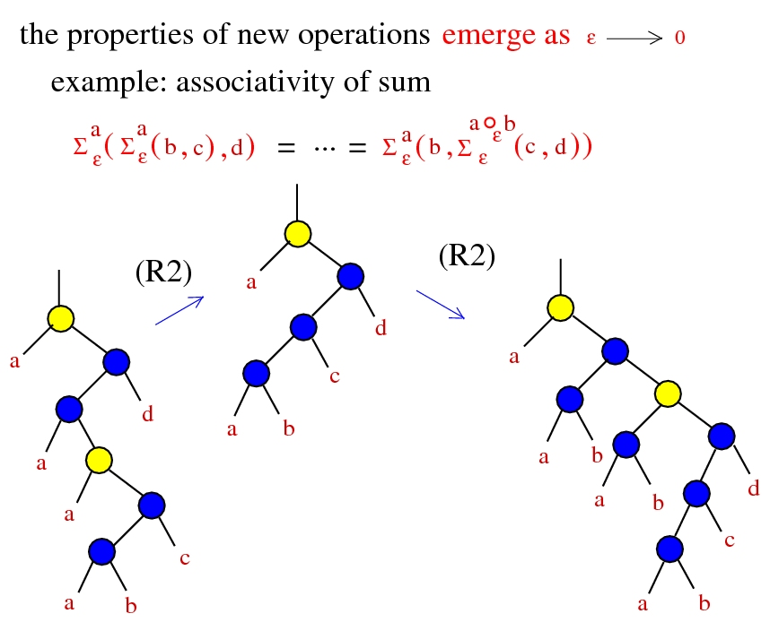
Drawing conventions 2
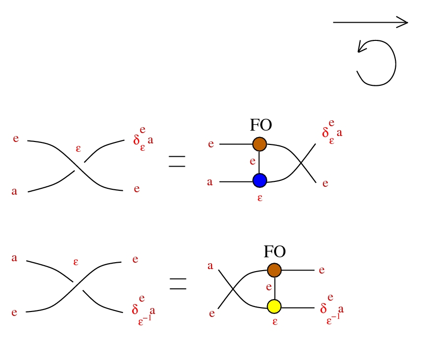
Tangles
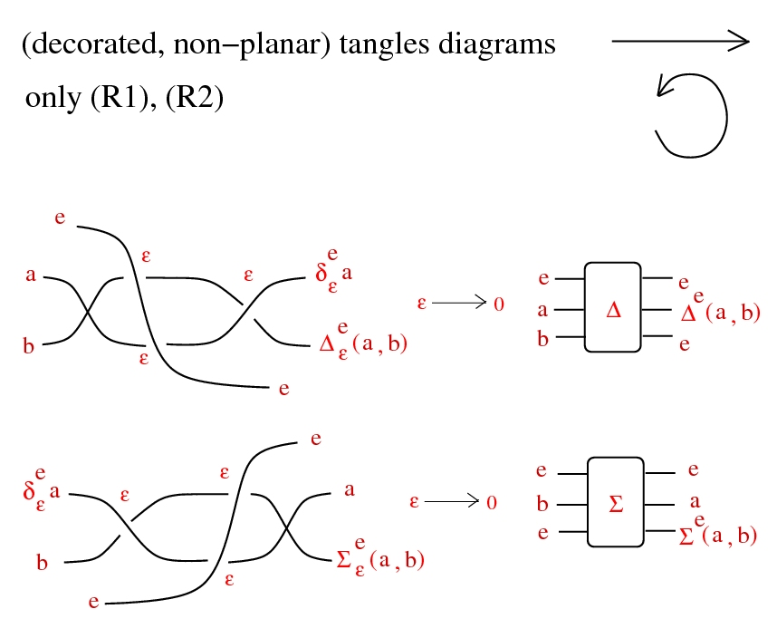
Chora
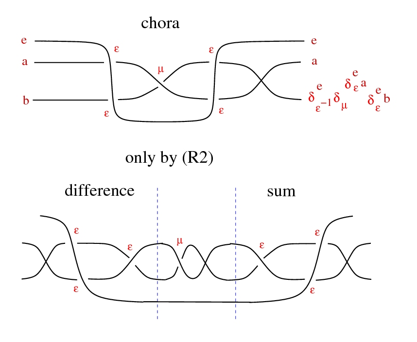
Chora
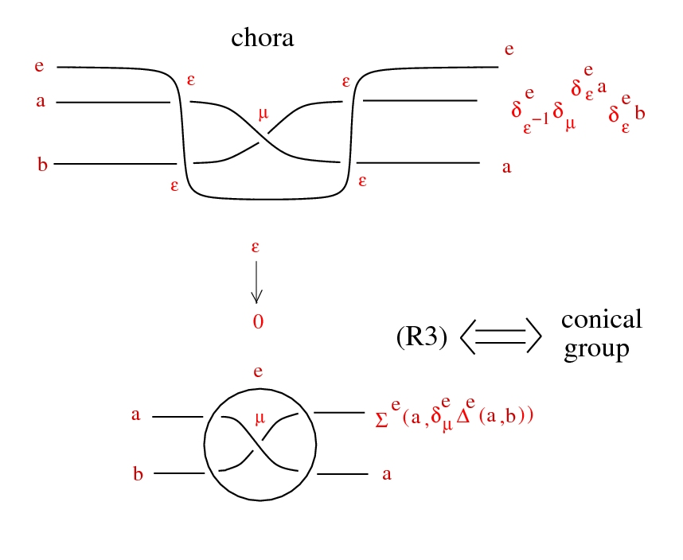
Conical groups
groups with:
an action by automorphisms
a ⋅ (x * y) = (a ⋅ x) * (a ⋅ y)
which are uniformly contractive:
ε → 0, ε ⋅ x → e, uniformly wrt x in compact set
an action by automorphisms
a ⋅ (x * y) = (a ⋅ x) * (a ⋅ y)
which are uniformly contractive:
ε → 0, ε ⋅ x → e, uniformly wrt x in compact set
Examples
- • (normed) finite dim vector space X, * = +, Γ = (0, ∞)
- • Heisenberg groups:
- - take (H, <,>) complex Hilbert space, X = H × R
- (x,u) * (y,v) = (x + y, u + v + (1/2) Im <x,y>)
- - distribution D from left translate of H in X, is completely nonintegrable
- - metric on D from Re <,>
- - Γ = C ∖ {0}
- a ⋅ (x,u) = (a x , ∣a∣² u )
- • or just any Carnot group
Tangles
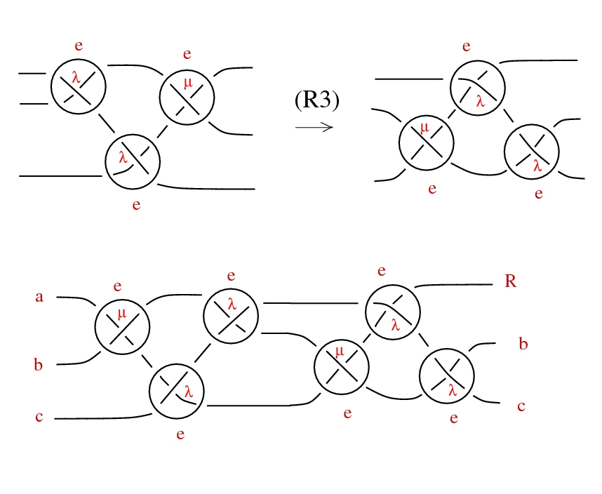
Rescale!
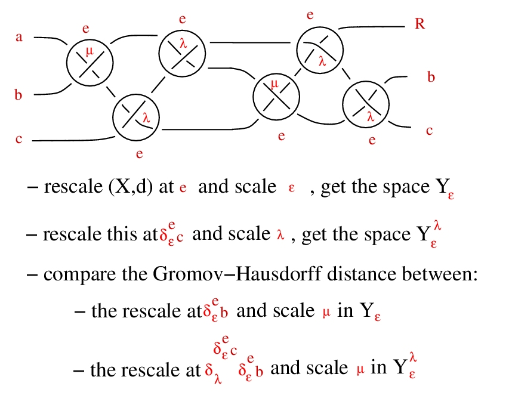
Commutativity
The operation * is commutative iff any of the following:
- - we can do the shuffle trick:
- 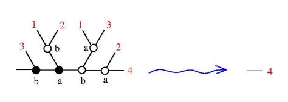
- - rays are semigroups, uniformly
- ∀ a, b ∈ Γ, ∃ a+b ∈ Γ, (a ⋅ x) * (b ⋅ x) = (a+b) ⋅ x
- - barycentric condition: ∀ a ∈ Γ, ∃ 1-a ∈ Γ
Commutativity
Let's denote the 3 ports of a dilation node as:
port 1: "from", port 2: "see", port 3: "as"
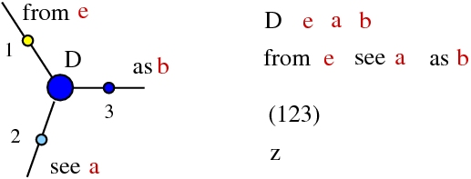
The operation * is commutative iff all the 6 permutations of ports are also dilations, with coefficients from the anharmonic group: Pure See!
port 1: "from", port 2: "see", port 3: "as"
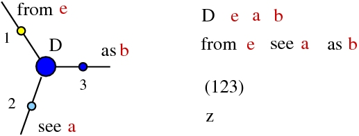
The operation * is commutative iff all the 6 permutations of ports are also dilations, with coefficients from the anharmonic group: Pure See!
Lambda calculus
(1936, A. Church) Untyped λ calculus is a term rewrite system
Terms:
- variable: x, y, z, ...
- term:
- - variable
- - A B where A, B terms (application)
- - λx.A where x var, A term (abstraction)
Term rewrite rule:
- β-reduction: (λx.D)B → D[x=B]
(1936, A. Church) Pure λ calculus is a term rewrite system
Term rewrite rule:
- β-reduction: (λx.D)B → D[x=B]
(1971, C.P. Wadsworth, 1990, J. Lamping) graph rewrite system

Emergent lambda
Aplication can be seen as:
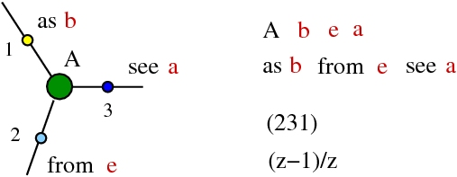
(all the 6 permutations of ports are also dilations, with coefficients from the anharmonic group: Pure See!)
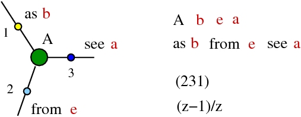
(all the 6 permutations of ports are also dilations, with coefficients from the anharmonic group: Pure See!)
Emergent lambda
Abstraction can be seen as:
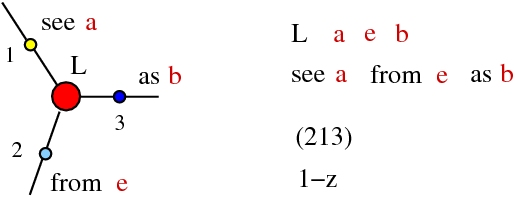
(all the 6 permutations of ports are also dilations, with coefficients from the anharmonic group: Pure See!)
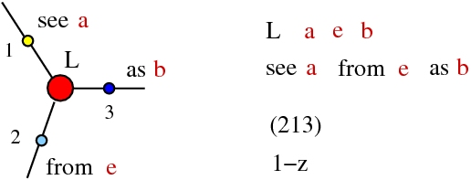
(all the 6 permutations of ports are also dilations, with coefficients from the anharmonic group: Pure See!)
β rewrite from shuffle
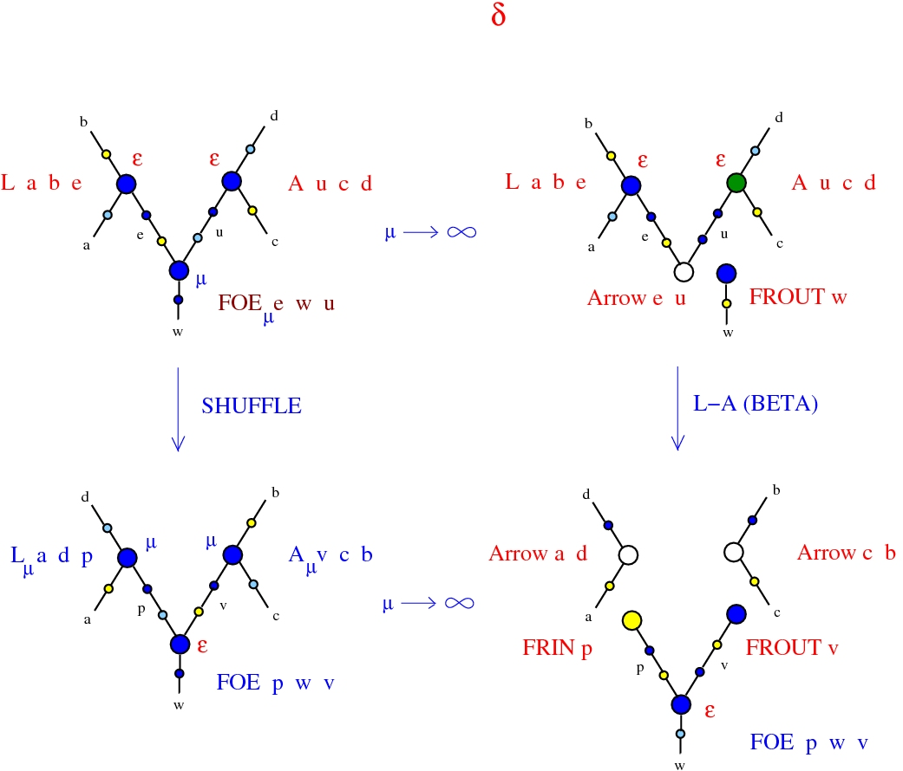
β rewrite from shuffle
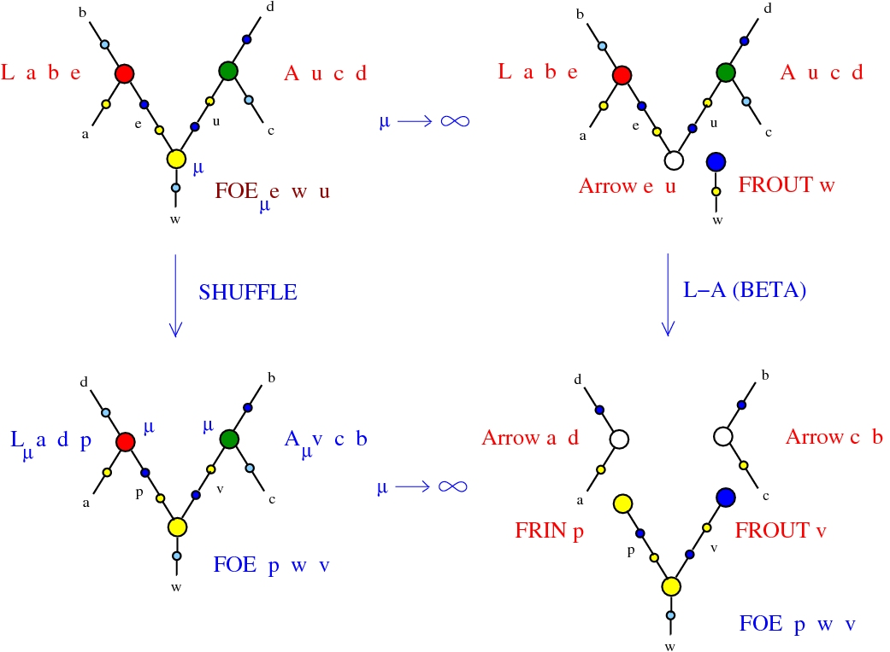